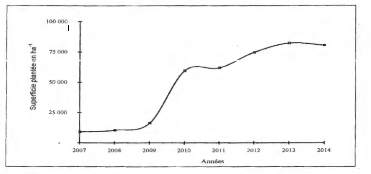
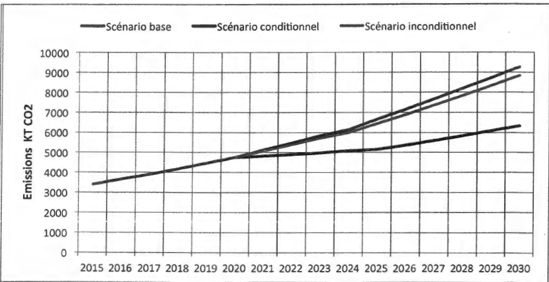
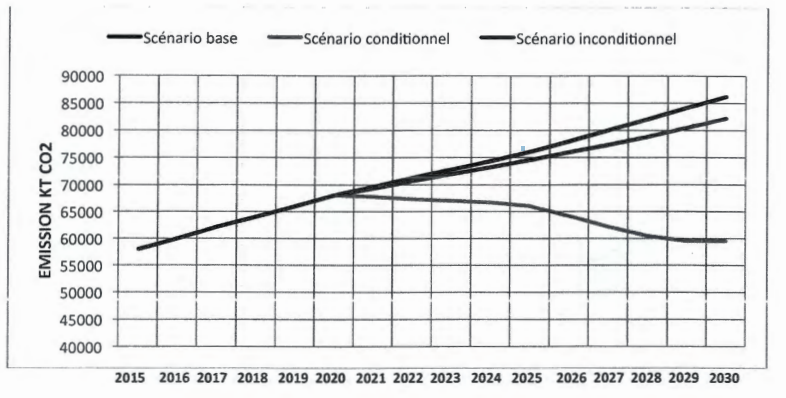

A People - A Goal - A Faith
21st Conference of the Parties
March 2016
EXECUTIVE SUMMARY
Mali, which is a carbon sink and will remain so until 2030, considers that it must contribute as much as possible to the collective ambition to limit by the end of the century the increase in global temperature. of the planet under 2°C.
Mali's economy is essentially based on the exploitation of natural resources. Population growth (3.6% / year) and climatic constraints have led to overexploitation and degradation of these resources. Two-thirds of the country is arid and semi-arid dominated by desertification problems. Natural hazards have increased with the intensification of climate change: repeated droughts, floods, strong winds, bush fires, destabilization of the rains. Agriculture, which is the most affected, accounts for 45% of GNP and employs about 80% of the active population.
This situation is all the more serious as climate scenarios up to 2100 forecast on average an increase in temperatures of 3 ° C and a decrease in rainfall of 22% for the whole country.
At the macroeconomic level, the country integrates climate change into planning processes, particularly into the coverage of the Strategic Framework for Growth and Reduction of Poverty (CSCRP), as well as in the National Protection Policy of the Environment and, since 2011, in the National Policy on Climate Change.
It is on these bases and based on the national technical services that the CDN of Mali was elaborated.
Forecasts of technical data for GHG calculations between 2015 and 2030 were made during sectoral consultation meetings for the three main sectors of greenhouse gas emissions (land use change and forestry, agriculture, energy) and at the multisectoral level.
The nature of Mali's mitigation commitments is that of a conditional mitigation scenario, with the support of cooperation partners, and that of an unconditional mitigation scenario, in case the country is the only one investor. They are based on the reduction of GHG emissions compared to a baseline scenario (BAU).
The gases considered are CO2 , CH4 , and N2O
The base case period is 2015-2030 and the 2020-2030 mitigation scenario.
Mali remains a greenhouse gas sink until 2030 for all scenarios. In 2030 it will sequester 29,242 kilo tonnes of CO2 equivalent , based on the baseline scenario and 84,437 kilo tonnes of CO equivalent, depending on the mitigation scenario.
The GHG reduction ambition level of the mitigation scenario compared to the baseline scenario is 29% for agriculture, 31% for energy and 21% for land-use change and forestry.
The overall cost of the conditional mitigation scenario is US $ 34.68 billion (energy 1.16, agriculture 20.6, and forest 12.92).
In terms of adaptation, Mali's vision is to make the green economy resilient to climate change a priority.
For the 2015-2020 period , the cost of needs to be sought by Mali amounted to US $ 1.062 billion. It corresponds to the funding of the five major programs that were exposed at the World Climate Summit in September 2014 in New York. These programs include forestry, smart agriculture and renewable energies
For the 2015-2020 period , the needs are based on sustainable development objectives focused on the continuation and intensification of the above programs complemented by:
In terms of financing, Mali has developed a strategy for sustainable financing of the environment and climate change that will play an important role in mobilizing the country's funds for climate change and the green economy. This strategy will be based in particular on the Mali Climate Fund (National Multi-Partner Fund) and on the Green Climate Fund for which Mali is firmly committed.
The mobilization of resources for the implementation of the programs identified in the INDC, is a conditionality so that Mali can on the one hand achieve its GHG reduction objectives and, on the other hand, adapt its production systems, its ecological systems and social systems to climate change. It is in this context that Mali will embark on a path of low carbon economic development that is resilient to climate change, further contributing to global efforts to stabilize greenhouse gases as part of common but differentiated responsibility.
| Nature of commitments | Conditional and unconditional mitigation scenarios based on the reduction of GHG emissions compared to a baseline scenario reflecting the normal business trend (Business-As-Usual BAU scenario). |
| Scope | Total greenhouse gas (GHG) emissions in the three most emitting sectors and carbon sequestration in the country; Adaptation for the entire national territory for the sectors covered. |
| Considered gases | Carbon dioxide CO2 Methane CH4 Nitrous oxide N2O. |
| Emissions presentation | Kilo ton (kT) for IE CO2 and Kilo tonne equivalent of CO2 (kTeq CO2 ) for other gases. |
| Reference period | 2007-2014 |
| Period of implementation | 2015-2020-2025-2030 for the 2020-2025-2030 baseline scenario for mitigation scenarios |
| Methodology for estimating covered sector emissions | Inventories of GHG emissions were conducted according to the 1996 IPCC Guidelines and the 2003 Good Practice Guidelines. Energy-Agriculture-Land Use Changes and Forestry. |
| Areas covered | Energy - Agriculture - land use changes and forestry. |
Mali is a carbon sink and will remain so beyond 2030. But Mali considers that it must contribute as much as possible to the collective ambition of limiting by the end of the century the increase in global temperature under 2 ° C compared to the industrial age in order to limit in the country, the negative impacts of climate change on agriculture and on the occurrence of the risks of natural disasters (droughts, floods, bush fires).
The level of GHG reduction ambitions of the conditional mitigation scenario compared to the baseline scenario (29% for agriculture, 31% for energy and 21% for forests) implies ambitious actions favorable to the country's development. and the improvement of production systems, namely: accelerating the inclusion of renewable energies in the energy mix, improving the performance of agricultural production processes, reducing deforestation and intensive reforestation.
| Population | 14.5 million |
| Population growth | 3.6% |
| Urbanization rate | 26.8% |
| Rural population | 73% |
| GDP growth rate | 7.2% |
| National poverty rate | 46.9% |
| National rate of access to electricity {2014) | 34.89% |
| Per capita energy consumption in 2010 | 0.20 toe / inhabitant |
| Annual electricity consumption in 2009 | 59.36 Kwh / inhabitant |
| Total installed capacity in MW in 2010 | 402MW |
| Estimated annual electricity demand (in 2010) | 182.4 MW |
| Share of renewable energy in national electricity production in 2010 | 3% |
| Mali's share of global GHG emissions | 0.06% |
Mali's economy is essentially based on the exploitation of natural resources. Population growth and climatic constraints have led to overexploitation and degradation of these resources. Mali considers that maintaining the integrity of natural environments is an ecological act but also an eminently economic act.
Two-thirds of the country is arid and semi arid dominated by the problems of desertification which are accentuated from the second half of the 20 th century with the scalability of climate change.
Natural risks have increased with the intensification of climate change: repeated droughts, floods, strong winds, bush fires, destabilization of the rainfall regime leading to uncertainty on agricultural calendars. Agriculture, which is the most affected, accounts for 45% of GNP and employs about 80% of the active population, and remains very sensitive to climate change.
Mali is committed to fighting climate change by signing the United Nations Framework Convention on Climate Change (December 28, 1994) and the Kyoto Protocol (January 27, 1999).
The country prepared its National Adaptation Action Program (NAPA) for the adverse effects of climate change in 2007. It presented to the convention its first and second national communication; the third communication is under preparation.
Mali developed its National Climate Change Policy in 2011, along with a strategy and action plan.
At the macroeconomic level, the country integrates the environmental dimension in general and climate change in particular in the planning processes, especially in the coverage of the Strategic Framework for Growth and Poverty Reduction (CSCRP), which constitutes the single reference framework for all the country's development policies for the period 2012-2017.
It has also elaborated a Strategic Framework for the Achievement of a Resilient and Green Mali that will enable the effective realization of a resilient and low-carbon economy while giving a new impetus to its objectives of economic growth and reduction of the economy. poverty.
National initiatives also concern the carbon market. They are geared towards "clean" or low-carbon technologies, mainly renewable energies.
At the institutional level, the Ministry of Environment, Sanitation and Sustainable Development is responsible for taking climate change into account. It entrusted the Environment and Sustainable Development Agency (AEDD), created in 2010, with the task of managing the various aspects of climate change.
Mali has also set up a National Committee for Climate Change (CCNC) which is the forum for consultation, guidance and mobilization of the country's vital forces. This committee is consulted regularly to support the teams preparing the national contribution, particularly through its thematic groups.
Overall, the latest estimates show that Africa is responsible for about 3% of global GHG emissions and Mali about 0.06%. Even if emissions are allowed to increase gradually as the country develops, Mali still remains a greenhouse gas wells (1st, 2 nd and 3 rd National Communication (NC) of Mali).
The emissions profile of the three main gases calculated during the development of Mali's Third National Communication (TCN) in 2010 is shown in Table 1.
Table 1: Emissions and Sequestration of the three main GHGs (2010) in Mali
CO2 carbon dioxide |
Methane CH4 |
N2O oxide |
||
|---|---|---|---|---|
| Energy | (KT) | 2676 | 63.81 | 0.75 |
| Total Energy (KTéq CO2 ) | 4289 | |||
| Agriculture | (KT) | 627 | 114 | |
| Total Agriculture (KTéq CO2 ) | 48507 | |||
| Forests and land use changes | (KT) | -245,177 | ||
| Total Drills and land-use change (KTéq CO2 ) | -244,799 | |||
| Total general emissions | (KTéq CO2 ) | -192 003 | ||
Positive values reflect emissions and negative values sequestration of GHGs.
The analysis of the inventory of GHG emissions in Mali highlights the existence of significant GHG mitigation potential, on the one hand by the reduction of GHG emissions in the main emitting sectors, agriculture and agricultural land use as well as energy, and on the other hand by strengthening the GHG absorption capacity of forests. It is these measures that will be the main elements of the CDN-MALI.
The methodology used for these scenarios exploits the IPCC MAGICC and SCENGEN tools.
The results obtained are the expected values for the whole country of climatic parameters with time horizons between 2015 and 2100 for rainfall and temperature.
For all localities in Mali, the most plausible climatic scenario foresees a reduction in rainfall, with loss rates relative to normal reported in Table 2.
Table 2: Decrease in rainfall
| Year | 2020 | 2025 | 2030 | 2050 | 2100 |
|---|---|---|---|---|---|
| Loss in% | 1 to 5 | 2 to 6 | 5 to 8 | 5 to 10 | 22 |
The results of this study showed that for all localities decrease attend one yardstick of rainfall that would result in a shift of isohyets south (Figure 1).
Figure 1: Decrease in rainfall and displacement of isohyets to the south in the Sikasso locality between 1960 and 2100
Temperatures, however, are rising in all localities of Mali with an average rate given in Table 3.
Table 3: Rising temperatures
| Year | 2020 | 2025 | 2030 | 2050 | 2100 |
|---|---|---|---|---|---|
| Temperature increase | 0.5 ° C | 1 C | 1.5 ° C | 1.7 ° C | 3 ° C |
According to the analysis of the extreme events during the very humid period of July in Mali, the maximum temperature which was of 30,5 ° C for the period 1961-1990 would be for the same month of: (i) 32,5 ° C in 2050 and the occurrence of temperatures above this value would be 40%.
(ii) 34.5 ° C in 2100 and the occurrence of temperatures above this value would be 36%. The analysis carried out showed an increase in this probability between 2025 and 2100.
In the case of a 20% decrease in rainfall (as foreseen in the plausible scenario built in the 2075s), rainfall will be similar to that of the dry period in the same climatic zones.
drought situations would be recognized over the first half of the rainy season (May, June and July) from 2025 on all stations in the country with an average climate sensitivity. The same situations could be established as early as 2020 if the reaction of the climate to the disturbances became faster.
Following these rainfall deficits, natural sources of water communities formed by surface water and shallow groundwater will be weakened to some extent.
The GHG emissions estimate was made based on the revised 1996 methodology and IPCC 2003 good practice. For this purpose, the computer tool was used through Excel spreadsheets developed by the IPCC for each of the sectors concerned.
The preparation of the forecasts and the choice of data were made during consultation meetings. They take place at the sectoral level for the three main sectors of greenhouse gas emissions (agriculture, forestry and land-use change, energy) and at the multisector level.
These meetings allowed:
In a medium-term perspective to ensure the country's sustainable development, although they emit very little GHG, two other sectors were considered: waste management and industry. They are not integrated in the CDN but will be subject to further processing.
The GHG calculations in the INDC are made by sector and then aggregated over three periods:
If Mali was the only investor in this exercise the corresponding scenario over this same period is the unconditional mitigation scenario .
Mali has significant renewable energy potential including:
(Source: National Directorate of Energy)
Despite this potential, the energy sector performs very poorly in terms of its main indicators, in particular:
Figure 2: Structure of final energy consumption in Mali in 2010.
The three national communications of Mali (the first in 1995, 2 nd in 2000, 3 rd in development) have all established that among the three most sectors that emit greenhouse gases (GESL is that of energy. The GHG emissions from this sector are steadily increasing (Figure 3), from 1995 to 2000 the increase was 60.32%, while it reached 83.63% between 2000 and 2012. In the period In 1995-2012, CO2 emissions increased from 945 kT to 2 782 kT, an increase of more than 190% over the 17 years.
Figure 3: Evolution of GHG emissions in the energy sector
The distribution of emissions in relation to the energy sub-sectors is shown in Figure 4. Analysis of this distribution shows that the residential sub-sector ranks first with the increased consumption of biomass , notably energy wood comprising the firewood and charcoal (82.20% significant sector emissions in 2012). Transportation sub-sectorcomes in second place (12.25% of the significant emissions of the sector in 2012) with the consumption of fossil fuel (petrol el gasoil). The processing subsector ranks third, particularly for fuel consumption in electricity generation (4.73% of sector emissions in 2012). Figure 5 shows the evolution of GHGs in the Energy sector between 2007 and 2014.
Figure 4: Distribution of CO2 emissions
Figure 5: Evolution of GHG in the sector by energy sub-sector in 2012. Energy between 2007 and 2014
Between 2007 and 2014, GHG emissions from energy production and consumption increased from 3 434 kTeq CO2 to 5 268 kTeq CO2 , an average annual increase of 6.44%. In the past, GHG emissions mitigation policies in the energy sector must move significantly towards residential, transport and energy industries.
The application of energy efficiency combining the rational use of energy, energy saving and energy management should allow a significant decrease in GHG emissions by 2030. The association of energy Together, these measures can be used to build the baseline and mitigation scenarios.
According to the IPCC methodology used to calculate GHG emissions, the Agriculture sector includes the following sub-sectors:
The GHG emissions in TE-CO2 from the Agriculture Sector for the period 2007-2014 are reported in the table and figures below. The burning of savannas and agricultural residues sub-sector emits only CO, which has no defined warming potential relative to CO2 . As a result, it is not included in this table.
Table 4: Summary of TE-CO2 emissions
| years | Breeding | Fertilizer | Rice | TOTAL |
|---|---|---|---|---|
| 2007 | 8,904,000 | 29,450,000 | 1,554,000 | 39,908,000 |
| 2010 | 10,206,000 | 34,720,000 | 2,016,000 | 46,942,000 |
| 2014 | 11,718,000 | 42,160,000 | 2,163,000 | 56,041,000 |
| Average | 10,276,000 | 35,443,333 | 1,911,000 | 47,630,333 |
Figure 6: Subsectoral distribution of emissions
The sector's emissions summary shows that the main GHG emission sub-sectors of the agriculture sector are chemical fertilizer (74%), livestock (22%) and irrigated rice (4%). ). Mitigation measures for GHG emissions in the agriculture sector will focus on these sub-sectors.
The forest area taken into account by the sector includes woodlands and savannas.
The main data used for the assessment of gases are the area of forest area, the area of forest plantations, the amount of timber harvested, and the area of mineral soils.
Forest plantation is an important activity in Mali marked by a sharp increase in the area reforested. Between 2007 and 2014, planted areas increased from 9,079 hectares to 80,387 hectares, a 9-fold increase.

Figure 7: Evolution of the area of forest plantations carried out in Mali between 2007 and 2014.
In the Forestry and Land Use Change sector, GHG sequestration, with an average value of 781473 kilo tonnes of CO2 per year, is provided solely by the forest area. On the other hand, the emissions, of an average value of 560976 Kilo Tonnes of. CO2 per year, come from mineral soils, used for farming systems and sylvopastoralime, and converted land (meadows and cleared land).
Table 5: Summary of sector GHG emissions in KT CO2
| years | Program | Sequestration | Net balance sheet |
|---|---|---|---|
| 2007 | 525152 | -784615 | -259,463 |
| 2010 | 532889 | -779906 | -247 017 |
| 2014 | 624863 | -779899 | -155036 |
Figure 8: Forest Sector emissions balance - land use changes in KT CO2 (Gg CO2 )
The forestry and land use change balance sheet is a GHG sequestration report with an average value of 2205050 Kilo Tonnes of CO2
The poor performance of the energy balance sheet and the significant energy potential of Mali motivated the development and implementation in the short and medium terms of policies, programs and plans for energy efficiency combining the rational use of energy. energy, energy saving and energy management. These actions concern all aspects of the energy sector, from production to consumption.
GHG emission scenarios for the energy sector have been developed on the basis of the National Energy Policy and related strategies and actions.
The main actions concerned are:
The programs and projects above provide the GHG reductions summarized in the following figure:

Figure 9: Basic scenario, conditioned mitigation and unconditional mitigation emission curves for 2015-2030
The baseline scenario shows that GHG emissions will increase from 3,400 kTeq CO2 in 2015 to 4,750 kTeq CO2 in 2020 to reach 9,269 kTeq CO2 in 2030. This gives an average annual increase of 6.91% between 2015 and 2030.
The consequences of mitigation measures between 2020 and 2030 will reduce the level of missions from 4750 kTeq CO2 in 2020 to 6336 kTeq CO2 in 2030. Thus, compared to the baseline scenario, emissions will fall by mitigation scenario, of 31.6% in 2030.
The mitigation scenario's emission reduction ambitions are 1486 kTeq CO2 in 2025, a reduction of 22.4%, and 2 933 kTeq CO2 in 2030, a reduction of 31.6%. The corresponding cost is US $ 580 million over five years, or US $ 1.16 billion over ten years for the conditional scenario of mitigation and US $ 174 million for the unconditional scenario.
The policies, plans and programs on which this prospective is based are:
The main actions involved are:
The programs and projects above provide the GHG reductions summarized in the following figure:

Figure 10: Base Scenario, Conditional Mitigation and Unconditional Mitigation Curves for 2015-2030
Emissions reduction targets are 9,759 KTeq CO2 in 2025 and 25,400 kTeq CO2 in 2030. The cost of this conditional mitigation scenario is US $ 20.6 billion.
In the agriculture sector, the most appropriate mitigation measures for GHG emissions are in three sub-sectors: irrigated rice, livestock and fertilizer management.
For the irrigated rice subsector, mitigation will focus on water management through intermittent irrigation to avoid permanent flooding of rice-growing land as a source of fermentation emissions.
For the livestock and chemical fertilizer sub-sectors, the mitigation measure will focus on the substitution of nitrogen-rich urea with organic manure, the production of which will reduce decomposition-related manure emissions. anaerobic
The cost of these GHG emissions in the agriculture sector is US $ 20.6 billion for the conditional mitigation scenario and US $ 3.09 billion for the unconditional mitigation scenario.
The policies, plans and programs on which this prospective is based are;
These policies and strategies are implemented by projects including those below;
| Project | stock |
|---|---|
| Global Alliance Project on Climate Change | Regional Forest Inventories Forest Data Management System Forest Reforestation and Regeneration |
| Decentralized Forest Management Program | Forest management and management plans Rational exploitation of wood energy in these massifs |
| Sustainable Development Program in the Niger Delta | Development plans and management of classified forests Plantations of village groves and fruit trees |
| Project against the silting of the Niger River | Dune fixation Forestry timber plantations |
| Project for Extension and Strengthening of the Protected Areas System | Protected area management Creation of migration corridors for wildlife Training of villagers |
| Enhanced Fireplaces (MDP) | Popularization of firewood fireplaces |
| Energy valorization (CDM) | Production of briquettes through agricultural by-products. |
| Reforestation and biofuel production (CDM) | Jatropha planting for rural biofuel electrification (JDP) Plantation of Jatropha in agrarian systems |
| Afforestation (CDM) | Acacia plantation Senegal. |
The programs and projects above provide the GHG reductions summarized in the following figure;
Figure 11: Net Balance / Sequestration Curves) Baseline Scenarios, Conditional Mitigation and Unconditional Mitigation Scenarios for 2015-2030
The baseline scenario is implemented by forest plantations at a total cost between 2015 and 2030 of US $ 1,229 million
The conditional mitigation scenario is implemented by the following measures:
The total cost of the conditional mitigation scenario is US $ 12,920 million.
The energy, agriculture, forestry and land-use change sectors are the main sectors emitting GHGs. The forestry and land-use change sector issues and sequesters but its net balance sheet is in sequestration.
The GHG emissions summary for the three energy, agriculture and forestry sectors and land-use changes is given in Table 6 below for the baseline scenario and mitigation scenarios (conditional and unconditional versions).
Table 6: Net balance projections of emissions and sequestration in kteq CO2
| years | Basic scenario | Conditional Mitigation Scenario | Unconditional mitigation scenario |
|---|---|---|---|
| 2015 | -155553 | ||
| 2020 | -109789 | -109789 | -109789 |
| 2025 | -69,327 | -95,494 | -52,324 |
| 2030 | -29,242 | -84,937 | -12,740 |

Figure 12: Evolution of baseline scenario, conditional attenuation scenario and unconditional mitigation scenario for all sectors from 2015 to 2030.
Mali remains a greenhouse gas sink until 2030 for all scenarios.
The baseline scenario shows that the net sequestration report for all sectors decreases significantly over the years.
The GHG mitigation gains from the conditional mitigation scenario compared to the baseline scenario improve this situation between 2020 and 2030. These gains are 31% for the energy sector, 29% for the agriculture and 21% for the forestry and land-use change sector, an average of 27% for all sectors.
The overall cost of the conditional mitigation scenario is US $ 34680,000,000, and the cost of the unconditional mitigation scenario is US $ 5,202,000,000.
The climate of Mali, of Sahelian type, is characterized by inter and intra annual variability of climatic parameters and by the intensification of droughts since 1970. This situation is exacerbated by the fragility of ecosystems and production systems (agriculture, livestock, fisheries, forestry ...), the needs of population growth and socio-economic constraints, making the country highly vulnerable and weakening its adaptive capacity.
In order to ensure sustainable development, adaptation measures to climate change are needed in all sectors of development.
It is in this context that Mali has developed several policies, strategies and action plans (table below) integrating national adaptation guidelines with reference to the Strategic Framework for Growth and Reduction of Poverty ( CSCRP).
These programs are currently being revised to develop Mali's National Adaptation Plan (NAP) for climate change by 2030 to better guide and coordinate actions.
| Policy or Strategy | Goal |
| National Environmental Protection Policy | Ensuring a healthy environment and sustainable development, combating desertification, ensuring food security, preventing and combating pollution and reducing poverty. |
| National Climate Change Policy, complemented by its strategy and plan of action | Framework of reference and steering for all the projects and programs implemented in Mali relating to the fight against climate change. |
| National Forestry Policy | Ensure integrated and sustainable management of renewable natural resources: forests, terrestrial and aquatic wildlife, land resources and biodiversity. |
| National Energy Policy | Contribute to the sustainable development of the country, through the provision of energy services accessible to the majority of the population at the lowest cost and promoting the promotion of socio-economic activities. |
| National Agriculture Policy | Promote sustainable, modern and competitive agriculture based primarily on family farms. |
| National Water Policy | Contribute to the fight against poverty and sustainable development by providing appropriate solutions to water-related problems. |
| National sanitation policy | Structuring the entire sanitation sector around a realistic development project. |
| National Planning Policy | To confer on economic development planning a territorial dimension, within the framework of an organization of space taking into account decentralization. |
| National Policy of Decentralization | Strengthen the process of democratization of society and adapt the missions and organization of the state to the requirement of promoting local initiatives. |
| Strategic Investment Framework for Sustainable Land Management | Reverse land degradation trends to ensure food security, reduce poverty and vulnerability. |
| National Adaptation Strategy of the Mali Forestry Sector to the Impacts of Home Change | Anticipate the potential impacts of domatic changes on the forestry sector in Mali and analyze vulnerabilities. |
| Renewable Energy Development Strategy | Promote wide use of technologies and equip Renewable Energy. |
National Strategy for Biofuel development |
Increase local energy production at lower cost. Through the development of biofuels. |
| National Population Policy | Mastering and gizzard revolution of the population of Mali. |
| National Gender Policy | Improving women's involvement in the country's management process. |
| National Transportation Policy | Improve transport systems in Mali to ensure an adequate opening up of the country. |
Forecast and adaptation needs for the 2015-2020 period
Mali's vision is to make the green economy resilient to climate change a priority but also a reality. Adaptation actions remain very important and crucial for the coming years in the fight against climate change.
The implementation of adaptation policies, strategies, plans and programs in Mali is carried out through the following programs and projects:
The costs of adaptation needs to be sought for the 2015-2020 period are those related to the 2014 World Climate Summit. It amounted to US $ 1.062 billion.
These needs are based on development goals through the rationale for a National Development Plan and Sustainable Development Goals:
The cost of adaptation actions by 2030 amounts to US $ 12.624 billion .
Mali has a National Adaptation and Mitigation Technology Transfer Plan. For adaptation technologies concern the practice of forage crops, the development of cropland, agro-meteorological techniques, crop varieties improved and adapted to climate change. For mitigation, they concern boreholes, small dams, pond overcrowding and modern wells (large diameter wells).
Mali also has a portfolio of more than 40 projects for the Clean Development Mechanism (CDM), enabling a potential reduction in emissions of at least 15 million TEQ CO2 per year.
In order to limit the impacts of climate change, and to strengthen the resilience of vulnerable communities and livelihoods, it is necessary to build capacity at all levels.
The financing of actions to combat climate change remains today the central element of the climate negotiations.
Mali is designing and implementing a strategy for sustainable financing of the environment and climate change that should reconcile the uniqueness of procedures, the transparency of information, the flexibility of management and the sustainability of funding in the regions. key operations.
This strategy will play an important role in mobilizing Mali's climate change and green economy funds, including those for the implementation of mitigation, adaptation and technology transfer actions in the NDC. .
With regard to climate change, this strategy will be based on:
HCFC phase-out and Het reconversion: A total elimination schedule of hydrochlorofluorocarbons (HCFCs) by 2030, a reduction of about 17.279 Teq CO2 .
In the face of climate challenges, the Government of Mali is determined to assume its responsibilities through a participatory approach, in an ambitious way, by building a new paradigm that fully integrates the human dimension in addition to the economic and ecological dimensions.
Mali expects its partners to also assume their own responsibilities under the United Nations Framework Convention on Climate Change. A strong signal would certainly be a significant and ambitious contribution to the Green Climate Fund.
The implementation of the priority projects / programs identified in the NSC, whose resource mobilization is a conditionality, are in line with the guidelines of the Strategic Framework for Growth and Poverty Reduction (CSCRP) and the National Policy on Changes. Climatiques (PNCC).
It is in this context that Mali is embarking on a path of low carbon economic development that is resilient to climate change, contributing further to global efforts to stabilize greenhouse gases as part of common but differentiated responsibility.